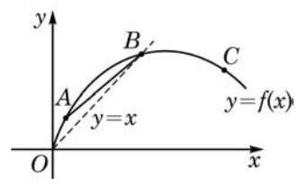
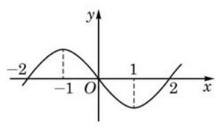

复习题A · 1
- 请根据图中的函数图像，将下列数值按从小到大的顺序排列:___.
① 曲线在点 处切线的斜率；
② 曲线在点 处切线的斜率；
③ 曲线在点 处切线的斜率;
④ 割线 的斜率;
⑤ 数值 0 ;
⑥ 数值 1 .

(第 1 题)
答案与解析收起 / 展开
- ③⑤②④⑥①.
教师整合版 / 沪教版高中数学
选择性必修第二册
第5章导数及其应用 · 保留教材主线与原题
教材与正式教参整合
17 世纪，两位科学巨匠伽利略(G. Galilei)和开普勒(J. Kepler)的一系列发现导致了数学从古典数学向现代数学的转折. 自然科学, 特别是天文学和力学等学科的发展都需要一种新的数学工具来研究运动和变化的过程, 这促成了微积分的发明和发展.
牛顿对微积分问题的研究始于 1664 年秋, 当时他正在剑桥大学读书. 他因对笛卡儿圆法产生兴趣而开始寻找更好的求切线方法. 1665 年 11 月，牛顿发明了“正流数术”(微分法)，次年 5 月又建立了“反流数术”(积分法). 1666 年 10 月，牛顿将前两年的研究成果整理成一篇总结性论文, 现以《流数简论》著称. 这是历史上第一篇系统的微积分文献. 在这篇论文中，牛顿通过揭示微分和积分的互逆关系而将两者统一为一个整体. 尽管如此，这一论文在许多方面还是不成熟的. 在其后的大约四分之一世纪的时间里, 牛顿不断地完善自己的微积分学说, 先后著成了三篇微积分论文: 《分析学》(1669)、《流数法》(1671) 和 《求积术》(1691). 它们真实地再现了牛顿创建微积分的思想历程.
与牛顿发明微积分的运动学背景不同, 莱布尼茨创立微积分首先是出于对几何学问题的思考. 1673 年, 他因在帕斯卡 (B. Pascal) 的有关论文中获得启迪, 而提出自己的“微分三角形”理论. 在对微分三角形的研究中, 莱布尼茨逐渐认识到什么是求曲线的切线和求曲线下的面积的实质, 并发现了这两类问题的互逆关系. 由此他建立起一种更一般的算法, 并将以往解决这两类问题的各种结果和技巧加以统一.
刚刚诞生的微积分以其神奇的效果赢得了普遍的关注, 但在理论上却是粗糙和不完美的, 后世的许多数学家为其理论的建立和完善作出了不懈的努力, 特别是欧拉(L. Euler)、 达朗贝尔(J. d'Alembert)、波尔查诺(B. Bolzano)、柯西(A. L. Cauchy)和维尔斯特拉斯 (K. Weierstrass)等人作出了重要的贡献. 直到 19 世纪后半叶, 现代意义的严密的微积分与数学分析理论才真正成形. 特别值得一提的是, 1859 年, 我国历史上首部微积分中文教科书《代微积拾级》在上海出版，标志着高等数学的传入. 此书的原作者为美国数学家罗密士(E. Loomis)，译者为中国数学家李善兰和英国人伟烈亚力(A. Wylie).
微积分的创立具有划时代的意义，它开辟了数学的新时代，使数学获得了极大的发展, 取得了空前的繁荣, 诸如微分方程、复变函数、微分几何等数学分支都应运而生. 微积分给出了一整套的科学方法, 开创了科学的新纪元, 并因此加强和加深了数学的巨大作用与应用. 有了微积分，人类才有能力把握运动和变化，进而推动了工业革命，促进了大工业生产, 最终有了现代化的社会. 微积分不仅极大地促进了天文学、力学、物理学等基础学科的发展，还在现代化学、生物学、工程学、地理学、经济学等自然科学、社会科学及应用科学各个分支获得了极其广泛的应用. 几乎所有现代技术领域, 如机械、仪器仪表、建筑、航海、航空航天、信息与通讯等，其技术的发展和产品的设计也都以微积分为基本数学工具.
纵观微积分的历史之旅，有着说不完的数学故事. 请同学们课后查阅有关书籍和资料, 认真地进行回顾和小结.
(1)导数的概念:函数 在 处的导数 ，是函数在 附近的平均变化率 当 趋近于 0 时所趋近的稳定值，记作
(2)导数的物理意义:在满足函数关系 的运动中，该函数在 处的导数 就是 时刻的瞬时速度.
(3)导数的几何意义:对于曲线 ，函数 在 处的导数 就是曲线在点 处的切线斜率.
(1) ， 为常数；
(2) ， 为常数；
(3) ；
(4) ；
(5) ；
(6) ；
(7) ；
(8) ;
(9) ,其中 ;
(10) ， 为常数；
(11) ，其中 .
(1)函数的单调性:在区间 上，若 ，则函数 严格增；若 ， 则函数 严格减.
(2)函数的极值:若 是函数 的极值点，则 ，即 是函数 的驻点. 反之,在 是函数 的驻点的前提下,若在 的左侧附近有 ,在 的右侧附近有 ,则 在 处取得极大值; 若在 的左侧附近有 ,在 的右侧附近有 ,则 在 处取得极小值.
(3)连续函数在闭区间上必存在最值(最大值与最小值).
① 曲线在点 处切线的斜率；
② 曲线在点 处切线的斜率；
③ 曲线在点 处切线的斜率;
④ 割线 的斜率;
⑤ 数值 0 ;
⑥ 数值 1 .

(第 1 题)
(1)求曲线 在点 处的切线方程；
(2)若曲线 经过点 ，求它与(1)中切线的另一个交点.
(1)小球的初始高度是多少？
(2)小球在 到 这段时间内的平均速度是多少？
(3)小球在 时的瞬时速度是多少？
(4)小球所能达到的最大高度是多少？何时达到？
(1) ; (2) ；
(3) ； (4) .
【编辑订正】(1) ；(2) ；(3) 在 无定义，因而不存在题目所问的导数值；(4) 。
(1) ； (2) ；___
(3) ； (4) .
(1) (2) ；
(3) .
(1) ；
(2) ；
(3) .
【编辑订正】(1) 最大值 ，最小值 ；(2) 最大值 ，最小值 ；(3) 最大值 ，最小值 。

(第 1 题)